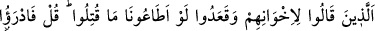
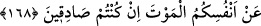

sayımızı artırarak bizi düşmana karşı savunun.” Çünkü sayısal açıdan çok gözükmek,
düşmanı yıldırır, psikolojik zaafa uğratır, dendiği zaman bu iki güzel davranış arasında
muhayyer bırakıldıkları halde; “savaşmayı bilseydik, sizinle gelirdik” dediler. Yani,
“bu karşılaşmanın savaş olduğunu bilseydik, sizinle gelirdik. Fakat şu içinde
bulunduğunuz vaziyet, savaş değil, resmen canı tehlikeye atmaktır” demek istediler. Ya
da âyet “güzel savaşabilseydik, sizinle gelirdik” anlamındadır. Ancak o zaman bu sözü
mü’minlerle dalga geçmek maksadıyla söylemiş olurlar.
“Onlar o gün îmandan çok küfre yakın idiler.” Münâfıkların, o gün îmandan çok
küfre yakın olmalarının mânası şudur: Münâfıklar, önceden nifaklarını gizledikleri
sırada, zâhiren küfürden uzak iken gizledikleri nifakları ortaya çıkınca, küfre daha yakın
hale gelmiş olmalarıdır. Çünkü gerek müslümanlara yardımdan geri durmaları, gerekse
aktarılan bu sözleri, bu kişilerin müslümanlardan olmadığını göstermektedir.
“Ağızlarıyla kalplerinde olmayanı söylüyorlar.” İçlerindekinin tam tersini
söylüyorlar. Îmân konusunda dillerinin söylediğine kalpleri muvâfakat etmiyor. Âyette
sözlerinin ağızlarına nisbet edilmesi, olayı tasvîr ve te’kid etmektedir. Çünkü kelâm, her
ne kadar hem nefsânî, hem de lisânî kelâm için kullanılmakta ise de “söz” sadece lisân
ve ağız ile olan kelâm için kullanılır. Dolayısıyle kavlden sonra bir daha ağzın
zikredilmesi, tıpkı “kanatları ile uçan hiçbir kuş yoktur ki...” (el-En’âm, 6/38) âyet-i
kerîmesindeki “kanatlar”ın te’kid ifade etmesi gibidir. Ayrıca bu sözün hakikatini,
ağızdan sudûr eden bir ferd sûretinde gösterip tasvîr etmektedir.
“Halbuki Allah, içlerinde sakladıkları şeyi çok iyi bilmektedir.” İçlerinde
sakladıkları şey ise, nifakları ve kendi başlarına kaldıklarında birbirlerine açtıkları
sırlardır. Sizler, bunları birtakım emâreler yardımı ile mücmelen bildiğiniz halde, Allah
Teâlâ, zarûrî bir ilimle tafsilatlı bir şekilde bilmektedir.
168. (Evlerinde) oturup da kardeşleri hakkında: “Bize uysalardı öldürülmezlerdi”
diyenlere, “Eğer doğru sözlü insanlar iseniz, canlarınızı ölümden kurtarın
bakalım!” de.
Buradaki “kardeşler”den maksat; kendilerine Uhud günü birtakım şeyler söyleyen
münâfıklar ya da kanbağı ve hemşehrîlik bağı ile bağlı oldukları kardeşleridir. O zaman
bazı şehidler de kardeşler sözünün şumûlüne girmiş olur.
Kendilerine emrettiğimiz hususlarda “bizim sözümüzü tutsalardı”; bu konuda bizimle
birlikte hareket etselerdi, biz öldürülmediğimiz gibi, bunlar da “öldürülmezlerdi,
diyenlere söyle:” Bu sözde, kendileri geri dönen münâfıkların bu kişilere de aynı şeyi
emrederek onlara iğvâ verdikleri açıkça görülmektedir.